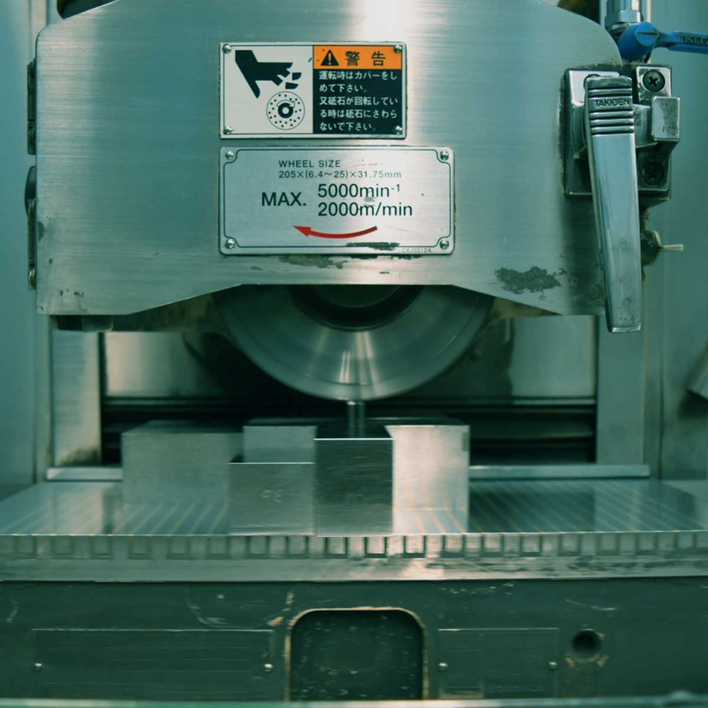
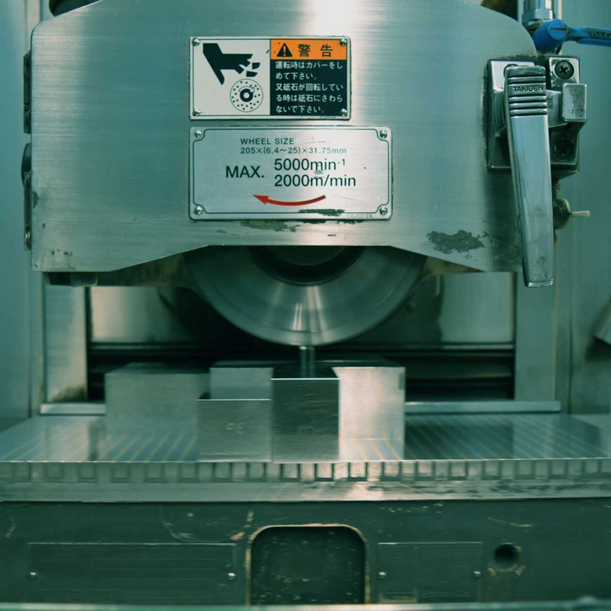

成形研削
| 機械名称 | 台数 | メーカー | 仕様 | 能力 |
|---|---|---|---|---|
| NFG-512AD Ⅱ | 4 | 日興機械 | ストローク 150×400 | |
| 2 | 岡本工作機械 | ストローク 150×400 |
ＮＣ研削
| 機械名称 | 台数 | メーカー | 仕様 | 能力 |
|---|---|---|---|---|
| マイスターG2P | 2 | ワシノ | ストローク 200×400 | |
| マイスターG2V | 1 | ワシノ | ストローク 200×400 | |
| マイスターPRO | 2 | ワシノ | ストローク 150×350 | |
| 52 | 1 | ワシノ | ストローク 200×500 |
ＯＮＣ成型研削
| 機械名称 | 台数 | メーカー | 仕様 | 能力 |
|---|---|---|---|---|
| PGX-4500 | 1 | 和井田製作所 | ||
| プロッター | 1 | 武藤工業 |
ＯＮＣ成型研削
| 機械名称 | 台数 | メーカー | 仕様 | 能力 |
|---|---|---|---|---|
| PGX-4500 | 1 | 和井田製作所 | ||
| プロッター | 1 | 武藤工業 |
NCフライス加工機
| 機械名称 | 台数 | メーカー | 仕様 | 能力 |
|---|---|---|---|---|
| KEV-55 | 1 | 牧野フライス | ストローク 550(X)×320(Y)350×(Z) |
ワイヤー放電加工機
| 機械名称 | 台数 | メーカー | 仕様 | 能力 |
|---|---|---|---|---|
| AP200L | 3 | ソディック | ストローク 150×200 | |
| AQ325L | 1 | ソディック | ストローク 250×350 |
放電加工機
| 機械名称 | 台数 | メーカー | 仕様 | 能力 |
|---|---|---|---|---|
| EDGE 2 | 1 | 牧野フライス | ストローク 300×250 | |
| A30R ATC 本 | 1 | ソディック | ストローク 200×300 | |
| AQ35L | 1 | ソディック | ストローク 350×250 |
測定機具
| 機械名称 | 台数 | メーカー | 仕様 | 能力 |
|---|---|---|---|---|
| 顕微鏡 TUM-170EHN | 1 | トプコン | ハイデンスケール | ストローク 70×150 |
| 顕微鏡 TMM-130D | 1 | トプコン | ハイデンスケール | ストローク 70×150 |
| 顕微鏡 TUM-170EHN | 1 | トプコン | ストローク 120×120 | |
| 顕微鏡 TUM-170EN | 1 | トプコン | ストローク 130×130 | |
| 投影機 UP-300D | 2 | トプコン | ストローク 50×100 | |
| ブロックゲージ スチール |
1 | 0級 | ||
| ブロックゲージ セラミック |
1 | 0級 | ||
| 画像寸法測定器 IM -7073 |
1 | キーエンス | ストローク 50×100 |
CAD/CAM
| 機械名称 | 台数 | メーカー | 仕様 | 能力 |
|---|---|---|---|---|
| Dipro Win | 1 | ソディック | ||
| WAPS | 1 | ワシノ |
LAP
| 機械名称 | 台数 | メーカー | 仕様 | 能力 |
|---|---|---|---|---|
| ハンド LAP一式 | 2 | ミニモ | 超音波震動タイプ |
 
